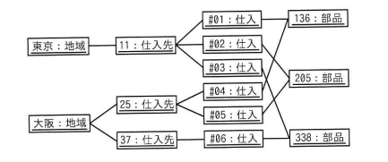
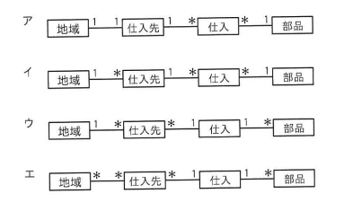

次のオブジェクト図（インスタンスを表す図）に対応する概念データモデルはどれか。ここで，オブジェクト図及び概念データモデルの表記にはUMLを用いる。
オブジェクト図（インスタンス）:
東京:地域 ── 11:仕入先 ── #01:仕入 ┐
├ #02:仕入 ┼─ 136:部品
└ #03:仕入 ┘
大阪:地域 ── 25:仕入先 ── #04:仕入 ┐
│ └ #05:仕入 ┼─ 205:部品
└ 37:仕入先 ── #06:仕入 ┴─ 338:部品
ア 地域 1─1 仕入先 1─ 仕入 ─1 部品
イ 地域 1─ 仕入先 1─ 仕入 ─1 部品
ウ 地域 1─ 仕入先 ─1 仕入 1─ 部品
エ 地域 ─ 仕入先 ─1 仕入 1─ 部品


イ：地域 1─ 仕入先 1─ 仕入 *─1 部品
| 選択肢 | 内容 | 補足 |
|---|---|---|
| ア | 地域1-1仕入先 1-仕入 -1部品 | オブジェクト図では大阪という1つの地域インスタンスに25・37という2つの仕入先インスタンスが対応しており、「地域:仕入先＝1対1」ではなく「1対多」が正しいため、この部分が誤り |
| イ | 地域1-仕入先 1-仕入 *-1部品 | 正解。地域から見て1つの地域に複数の仕入先が存在し（1対多）、仕入先から見て1つの仕入先に複数の仕入が存在し（1対多）、仕入から見て複数の仕入が1つの部品に対応する（多対1）という、オブジェクト図のインスタンス間の対応関係を正しく表している |
| ウ | 地域1-仕入先 -1仕入 1-*部品 | 仕入先と仕入の多重度が「多対1」、仕入と部品の多重度が「1対多」となっており、オブジェクト図で確認できる実際の対応関係（仕入先:仕入＝1対多、仕入:部品＝多対1）とは逆になっているため誤り |
| エ | 地域-仕入先 -1仕入 1-部品 | 地域と仕入先の関係が「多対多」となっているが、オブジェクト図では1つの仕入先（11、25、37）はそれぞれ1つの地域（東京または大阪）にのみ属しており、「多対多」ではなく「1対多」が正しいため誤り |